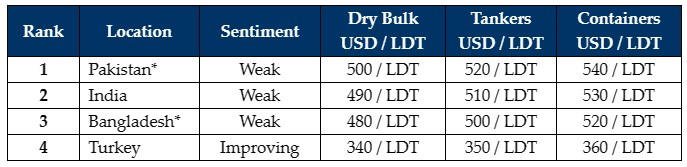

inWeekly Demolition Reports08/01/2024

After what has been an overall miserable 2023 in the ship-recycling industry and even worse6-month tail end of, whereby all of the major ship recycling destinations were swept up in declining vessel prices, a plummeting supply of fresh units, currency depreciations, and rampant global inflation, 2024 seems to be off with just a little more hope and a chance at recovery as positive signs seem to permeate through the markets.
Critical factors such as declining currency values (except in India), flatlining / declining local steel plate prices, and the dreadful (& ongoing) lack of funding on fresh acquisitions (in Bangladesh and Pakistan), all came together and festered into the inescapable quicksand that eventually bogged the markets down by over USD 100/LDT on vessel prices, over the course of the summer / monsoon months of 2023.
‘Thankfully’, the ongoing dearth of tonnage seems to have played its part and kept vessel prices relatively buoyant in nearly all of the international ship recycling markets – around (and even well in excess of) USD 500/Ton in the Indian sub-continent & around USD 350/MT in Turkey – certainly some very strong numbers to contend with, given that lows in the USD 200s/Ton greeted the sub-continent ship recycling markets only as recently as 2015 / 2016.
Additionally, the lack of financing available to Ship Recyclers in both Bangladesh and Pakistan through much of 2023 has only further ensured that a minimal number of deals would be concluded into these markets – so unsparingly & unforgiving have these recent restrictions on L/C approvals been.
While the rampant flatlining of local steel plate prices (in Bangladesh & Pakistan) was ensued by the ever-present volatility that devoured much of 2023, early 2024 (especially until May) will likely be a similarly quieter period as elections are expected across various sub-continent locations and even though Bangladesh & India are not expecting any change in their leadership or drastic changes to the ongoing status quo, this may / may not be the greatest of news needed to stimulate their respective economies & drive some much-needed growth for the rest of 2024.
For week 1 of 2024, GMS demo rankings / pricing for the week are as below.
GMS would like to wish readers a Happy New Year and the best for 2024 ahead!

📄 Download PDF: Ship-recycling-market-insight-week-01-2024-Whats-in-Store-For-24.pdfSource: GMS,Inc. ,https://www.gmsinc.net/gms_new/index.php/web